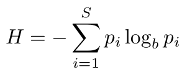

Para que serve?
O índice de Shannon (também chamado de índice Shannon-Weaver ou de índice do Shannon-Wiener) � ′{\displaystyle H^{\prime }} é um dos diversos índices da diversidade usados para medir a diversidade em dados categóricos. É simplesmente a informação entropica da distribuição, tratamento as espécies como símbolos e o tamanhos da respectiva população como uma probabilidade. Este artigo trata a sua utilização para medir a biodiversidade. A vantagem deste índice é que ele leva em consideração o número das espécies e as espécies dominantes. O índice é incrementado, quer por terem adicionado uma única espécie, ou por terem uma importante equitatividade. O nome "Shannon-Weaver" é uma contração imprópria; aparentemente alguns biólogos concluiram erradamente que Warren Weaver, autor de um influente prefácio do livro formulardo[1] por Claude Shannon publicado em 1948 papel [2] fundador da teoria da informação, era uma Cofundador desta teoria. Weaver teve um papel crucial no rápida desenvolvimento da teoria informação, no pós guerra, de um modo diferente, no entanto, como um influente administrador da Fundação Rockefeller, ele garantiu que a primeira publicações teóricos recebessem generosas doações para a pesquisa. Norbert Wiener não tinha em mão se quer o índice, embora sua influencia seja popular na cibernética era frequentemente relacionado a teoria da informação na década de 1950.

Isso aqui deve ser modificado, para posteriormente botar mais coisas e ser formatado com sucesso